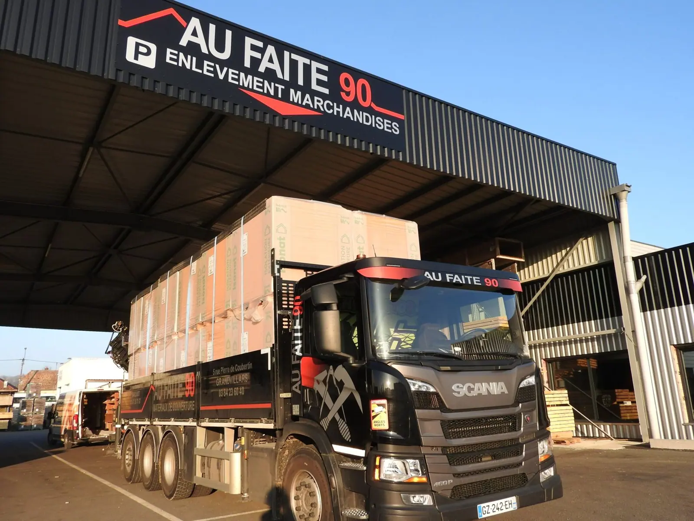
GrandvillarsSiège, atelier de pliage, bureaux
Horaires 5 rue Pierre de Coubertin, 90600 Grandvillarsgrandvillars@aufaite90.com
Du lundi au vendredi, 7 h 30 à 12 h et 13 h 30 à 18 h. Fermé le week-end.
Négoce de matériaux de couverture depuis 2007, en France et en Suisse. Pour les particuliers comme pour les professionnels, en construction, rénovation et aménagement.
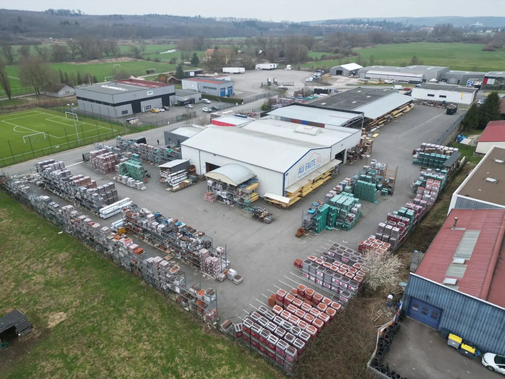
Après Grandvillars, Au Faite a ouvert Valdoie et Saulnot : plus près de vos chantiers, avec le même stock et les mêmes conseils.
Faites défiler : la toiture s’ouvre couche par couche. Cliquez sur une étiquette pour ouvrir le rayon, ou sur un élément de la maison pour le voir en 3D.
Bardage, isolation, bois, couverture, zinguerie : neuf rayons, et ce qui n’est pas en stock, on le commande.

Lambris, rives et cache-pannes en bois ou PVC, bois de charpente et panneaux.
Voir le rayon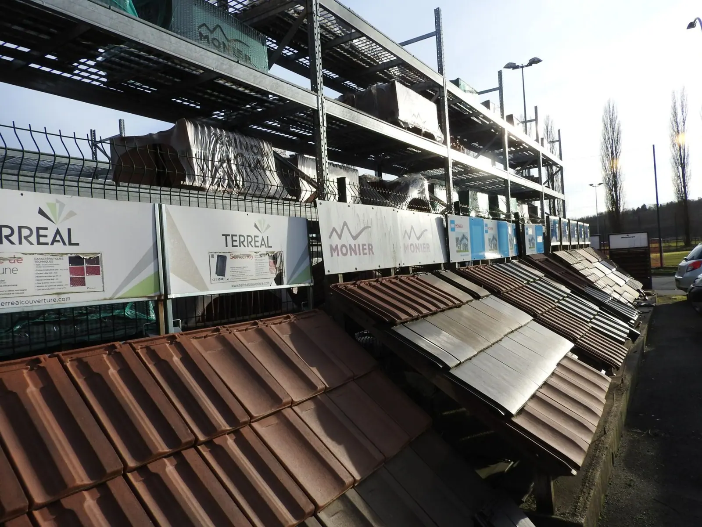
Tuiles, ardoise, bac acier, panneaux isolés, fibrociment, translucide et bardeaux.
Voir le rayon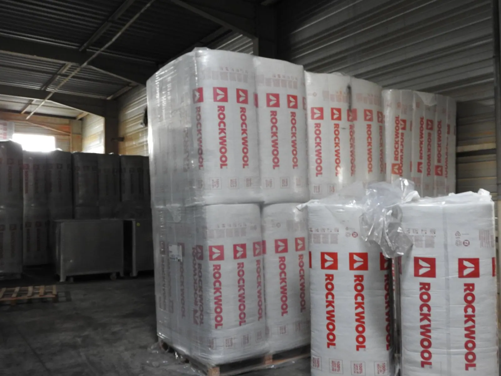
Laines minérales et végétales, ouate, PU, isolants minces, membranes PVC, EPDM et bitume.
Voir le rayon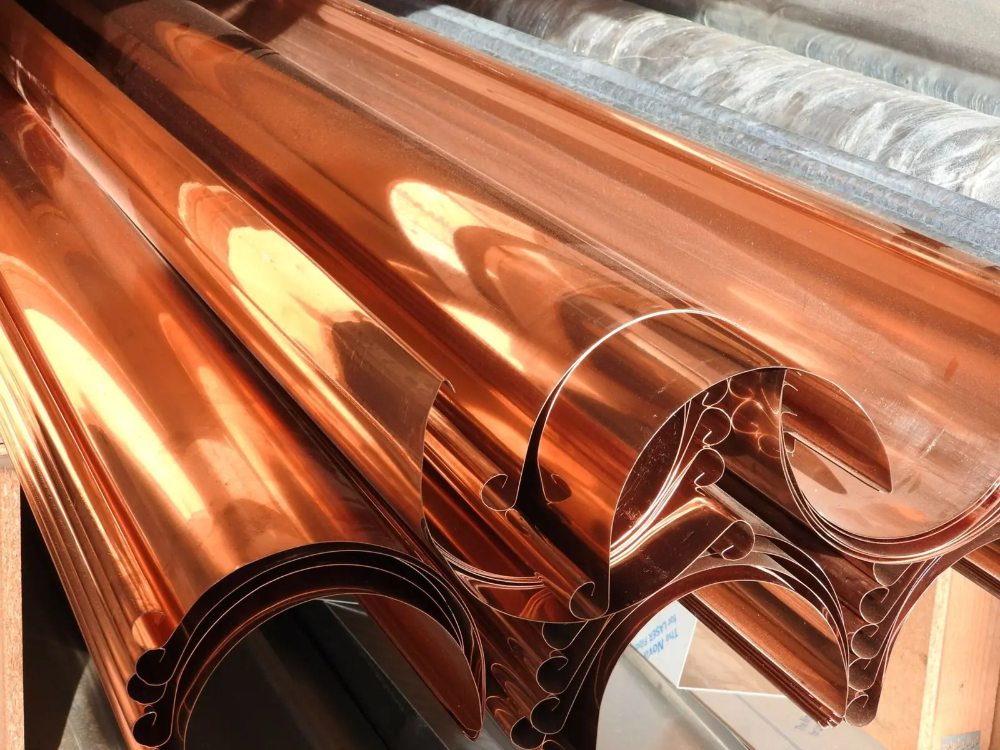
Gouttières, descentes et tous leurs accessoires, en zinc, galva, acier laqué ou cuivre.
Voir le rayon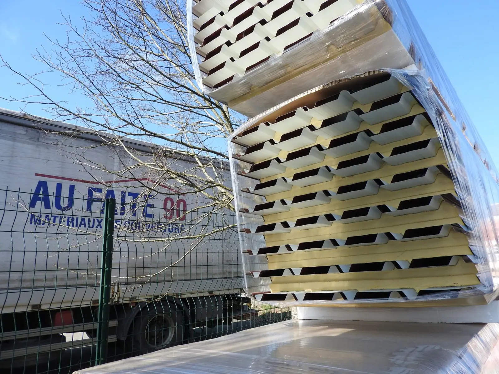
Bardage acier, panneaux de façade, PVC et fibre-ciment.
Voir le rayon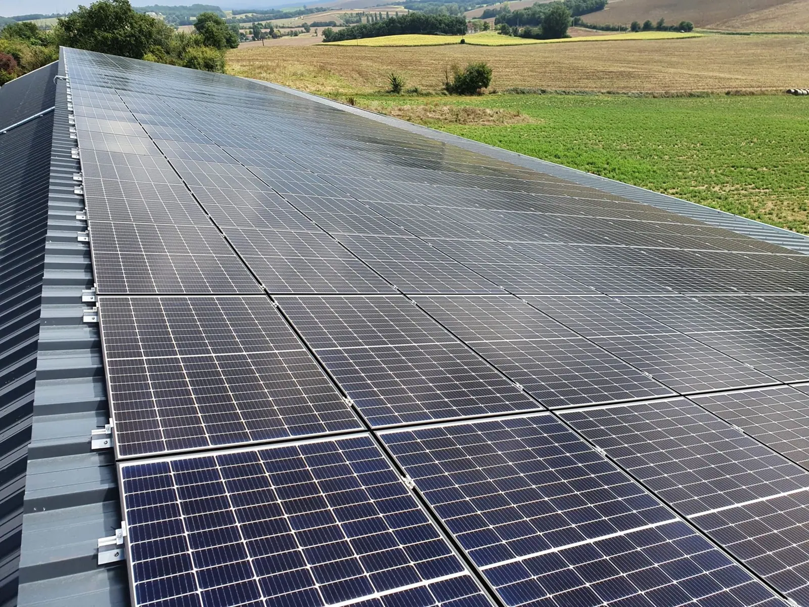
Modules intégrés ou en surimposition, systèmes de montage et accessoires.
Voir le rayon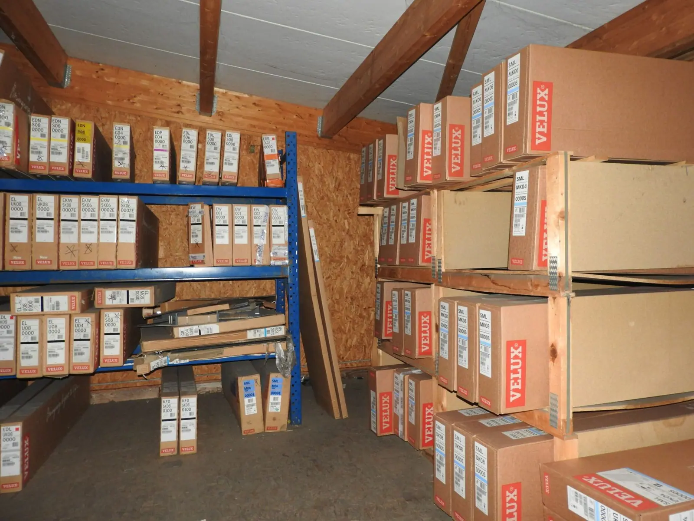
Fenêtres de toit, volets, stores, verrières, lanterneaux, conduits et sorties de toit.
Voir le rayon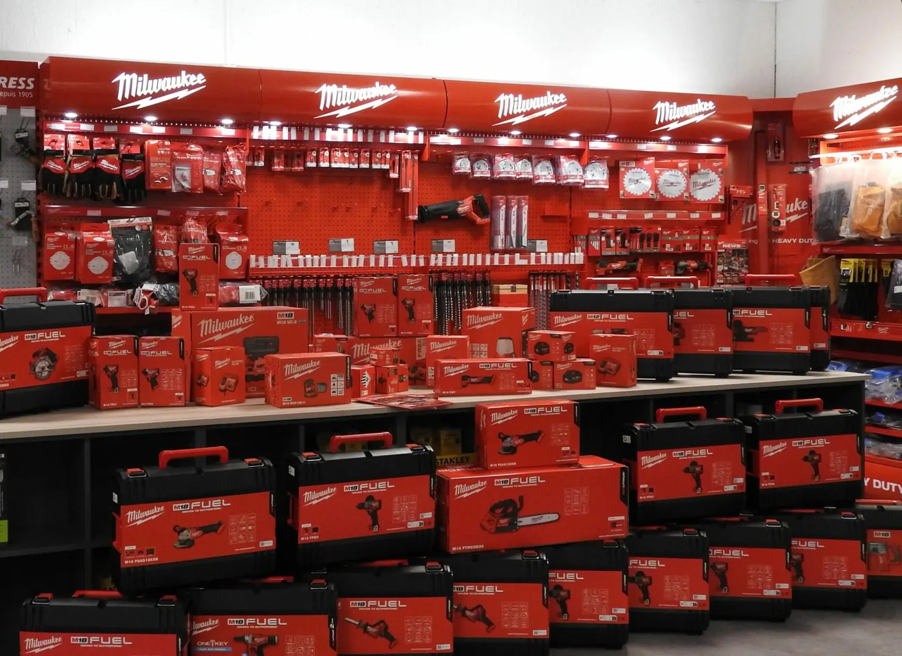
Électroportatif, outils de couvreur, consommables, manutention et EPI.
Voir le rayon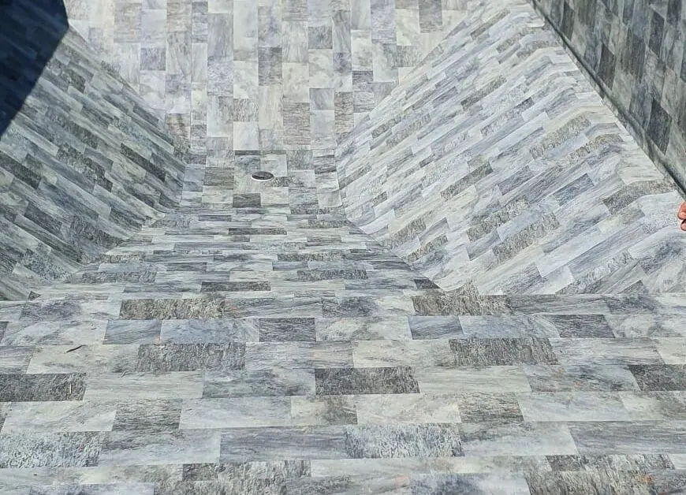
Piscines, saunas, spas, traitement, équipements, pergolas et douches.
Voir le rayon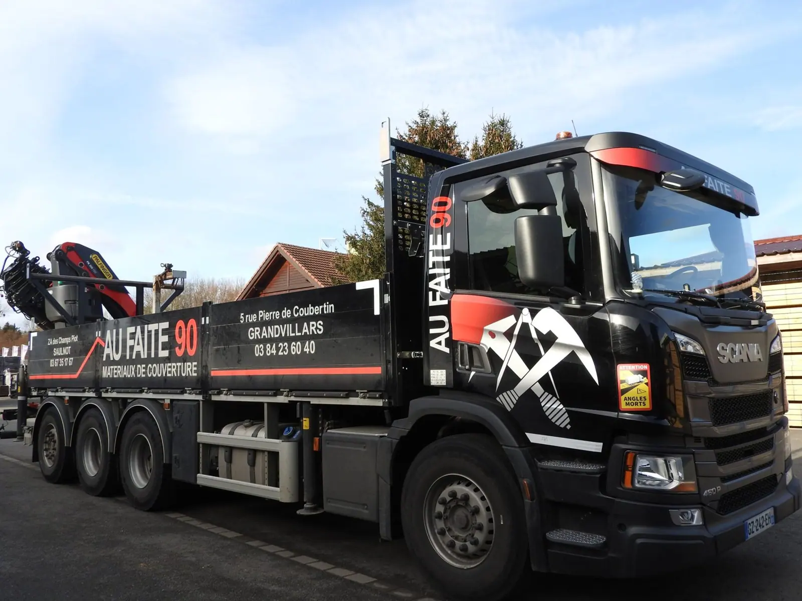
Livré, grué, posé au pied du chantierDes livraisons rapides et fiables, avec mise en place des matériaux sur chantier par grutage, et un suivi de la commande jusqu’à la livraison.
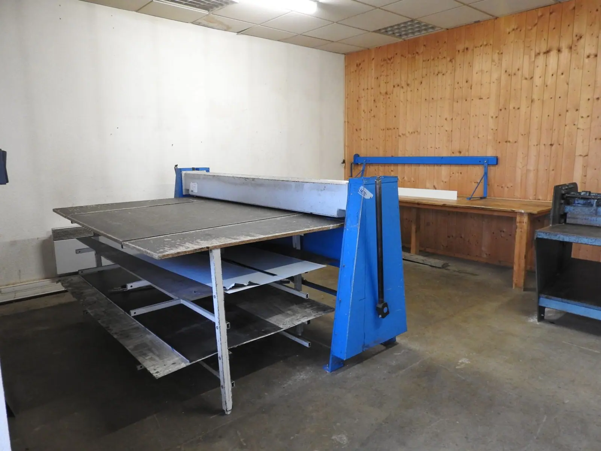
Une plieuse et une guillotine à Grandvillars pour l’aluminium, le zinc et les couvertines jusqu’à 2 m, le pliage sur mesure à Saulnot, et neuf machines en location : souffleuses Jetrock, cardeuse, cloueurs, carotteuse…
Fermés le samedi et le dimanche. L’indication d’ouverture se met à jour en temps réel.

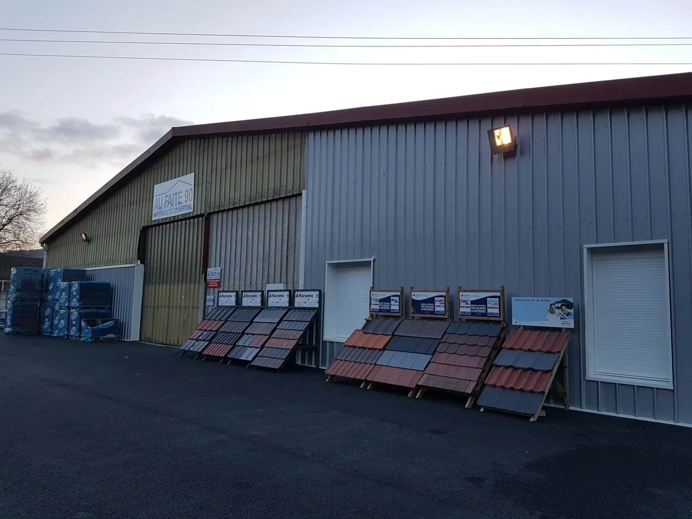
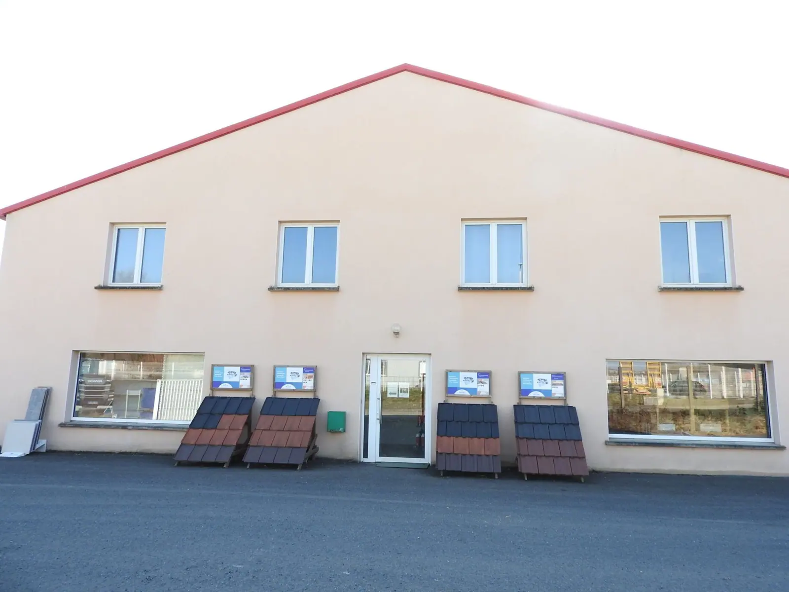
Votre avis aide les artisans et les particuliers de la région à nous trouver.